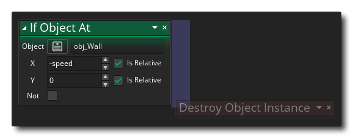

Si objet à la place Si objet à la place
Si objet à la place Si objet à la place Cette action est utilisée pour vérifier s'il existe une collision avec une ou plusieurs instances d'un objet donné, l'instance actuelle étant placée à un point de la pièce, en fonction du masque de collision de l'instance appelante. L'action évaluera à true si une collision est détectée, ou false autrement. Vous donnez l'objet à vérifier et la position pour "placer" l'instance à effectuer, qui peut être une position absolue dans la pièce ou une position relative à l'instance - et vous pouvez également cocher le drapeau Non pour vérifier s'il y a lieu. n'est pas une collision à la position donnée, auquel cas l'action n'évaluera alors que true si aucune collision n'est trouvée, sinon elle sera évaluée comme false.
Après avoir donné l'objet et la position, vous pouvez cocher / décocher l'option de retourner la liste. En cochant cette case, l'action crée et remplit une structure de données de liste avec toutes les instances en conflit avec l'instance et définit la variable cible sur l'ID de liste DS. Si cette case n'est pas cochée, la variable cible ne sera définie que sur une valeur inférieure à 0 si aucune collision n'est détectée, ou sur la valeur d'ID unique de l' une des instances de la collision (notez que si plusieurs instances sont en conflit, vous n'avez aucun moyen de savoir quel identifiant d’instance sera renvoyé s’il n’utilise pas de liste).
Si vous avez choisi de renvoyer une liste (et que la variable cible n'est pas définie sur Temp), vous pouvez également sélectionner l'option Cible libre. Lorsqu'il est réglé sur true, la liste contenue dans la variable cible sera détruite et une nouvelle liste créée (et renvoyée à la variable cible) chaque fois que vous appelez l'action. De cette façon, vous pouvez réutiliser la même variable sans vous soucier des fuites de mémoire, car si vous ne cochez pas l' option Cible libre, vous êtes responsable de la destruction de la liste avant de réutiliser la variable dans l'action. Notez que que cette option soit cochée ou non, si vous avez défini l’action sur Renvoyer la liste, la variable cible contiendra toujours un ID de liste, qui devra donc être libéré lorsque l’instance sera détruite ou la salle se termine (vous pouvez utiliser pour cela l’événement Nettoyer, par exemple, avec l’action Structure de données libre ). Il est à noter que vous pouvez définir l'option Cible libre pour utiliser une variable prédéfinie ou une expression et ainsi contrôler le moment où la structure de données de liste est libérée en définissant la variable ailleurs (ou en obtenant des résultats différents pour l'expression), à condition que évalue à true / false.
Enfin, vous fournissez la variable cible dans laquelle vous souhaitez conserver la valeur renvoyée ou l'ID de liste. Si vous marquez la variable cible devant contenir la valeur renvoyée comme étant une variable temporaire (locale), l'action créera cette variable pour contenir la valeur renvoyée uniquement jusqu'à la fin de l'événement. Dans ce cas, l'option Cible libre ne fait rien et vous serez responsable de la destruction de la liste DS si cette option a été cochée. Si aucune variable cible n'est fournie et que l'option Liste de retour est cochée, aucune liste ne sera créée.
IMPORTANT! Les collisions ne s’enregistreront que pour les instances ayant un masque de collision valide, c’est-à-dire qu’un sprite est attribué à la sprite_index, ou un sprite assigné à la mask_index. Si aucune des occurrences de la collision ne comporte de masque de collision, la collision ne sera pas détectée, quel que soit l'instance dessinée à ce moment-là.
Notez que pour ajouter des actions dans un bloc "if", elles doivent être laissées sur le côté de l'action, comme indiqué dans l'image ci-dessous: 
Argument La description Object L'objet à vérifier pour les instances de x La position x à vérifier y La position y à vérifier Free Target Peut être défini sur une variable ou une expression, ou sur true / false contrôler la libération de la liste mémoire lors de la réutilisation d'une variable liste Target La variable à cibler pour la valeur de retour de l'action
Le code de bloc d'action ci-dessus vérifie les collisions avec les occurrences de l'objet "obj_Wall" à gauche et à droite et, le cas échéant, il inverse le sens horizontal de l'instance appelante.